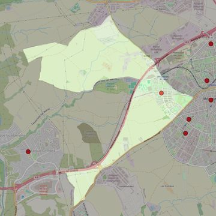

Nuestra Señora del Rosario y de la Esperanza
- Arciprestazgo
- Móstoles
- Población
- Móstoles
- Dirección postal
- Avda. Iker Casillas, 23
- Código postal
- 28935
- Extensión
- 9,45 km² (945 ha)
- Teléfono
- 916 093 701
- Correo electrónico
- elrosarioylaesperanza-mostoles@diocesisgetafe.es
- Información demográfica
- De la parroquia · De la población (Móstoles) · Del arciprestazgo (Móstoles)


Descargar mapaLímites según decreto
" Partiendo de la confluencia de la calle Granada con la Avda. de Portugal, se sigue ésta hasta la autovía de Extremadura, dirección Navalcarnero, allí se sigue la autovía de Extremadura dirección Madrid, hasta el camino de "El Soto de San Marcos" que seguimos dirección Colonia Rio Guadarrama, antes de llegar una línea imaginaria, parte hasta la carretera de Villaviciosa a Móstoles, la cual continuamos, así como la calle Granada hasta la confluencia con la Avda. de Portugal" (Decreto de rectificación de límites de 1-3-94
Desarrollos urbanísticos previstos
- Móstoles: plan parcial SUS R-1: 9.538 viviendas · en tramitación o en licitación
Las cifras y sus fuentes están en la ficha de cada desarrollo, en la sección «Previsión de desarrollos urbanísticos».